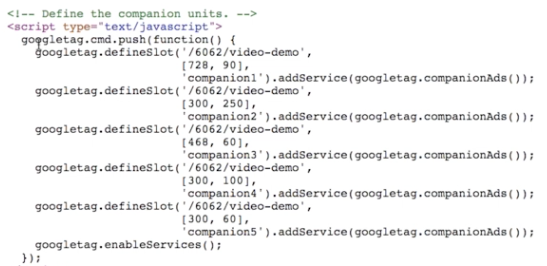

VMAP：「廣告播放清單」；指定播放前、中捲和後捲 (VMAP 文件的 URL)；格式為 XML
- DFP 呼叫 VMAP 文件「廣告規則」；使用廣告規則，您可以在伺服器上設定所有廣告，以及瞭解廣告規則的任何客戶端的行為相同；在客戶端的「壞日子」廣告設定中；邏輯移至發佈系統
廣大：個別廣告詳細資料；VMAP 會指向包含廣告相關資訊的 VAST 文件

已付款：像 VAST 一樣，但互動式廣告的標準; 廣告包含測驗或愚蠢的遊戲（還沒有 BC 播放器支持）
VMAP：「廣告播放清單」；指定播放前、中捲和後捲 (VMAP 文件的 URL)；格式為 XML
廣大：個別廣告詳細資料；VMAP 會指向包含廣告相關資訊的 VAST 文件
已付款：像 VAST 一樣，但互動式廣告的標準; 廣告包含測驗或愚蠢的遊戲（還沒有 BC 播放器支持）
IMA 約束：2 個版本的 IMA 庫，閃存或 HTML 版本，不能同時使用
IMA 外掛程式的基本實作

動態廣告目標設定：在收集客戶資訊後完成 IMA 外掛程式的設定 (例如觀眾年齡，然後選取廣告規則)
